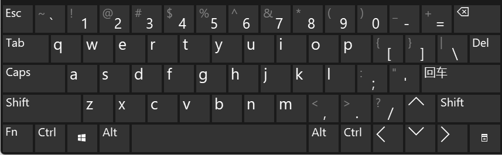
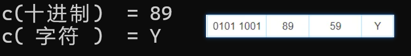

<!DOCTYPE lake>
<h1 data-lake-id="k4Z5w" id="k4Z5w"><span data-lake-id="u8061b192" id="u8061b192">0&gt; 大胆猜测</span></h1><span class="yuque-card-unsupported">[codeblock]</span><ul list="u349e3522"><li data-lake-id="u71c9bcab" fid="u4f9fbdd5" id="u71c9bcab"><span class="lake-fontsize-14" data-lake-id="u7dcf8cff" id="u7dcf8cff">%c， </span><strong><span class="lake-fontsize-14" data-lake-id="ube89e1d8" id="ube89e1d8" style="color: #DF2A3F">c</span></strong><span class="lake-fontsize-14" data-lake-id="ub3cb5afb" id="ub3cb5afb">haracter</span></li></ul><hr/><h1 data-lake-id="lZv86" id="lZv86"><span data-lake-id="u9aaaa0cc" id="u9aaaa0cc">1&gt; 计算机如何存储你输入的字母？</span></h1><p data-lake-id="ub5aa11aa" id="ub5aa11aa"><span data-lake-id="u533d9be6" id="u533d9be6">当你按下键盘上的字母 'A'，计算机真的存储了 'A' 这个符号吗？</span></p><p data-lake-id="udb6e427b" id="udb6e427b"><span data-lake-id="u3dead193" id="u3dead193">计算机不是只认识0或1吗？那怎么存'A'这个符号呢？</span></p><p data-lake-id="udc906e88" id="udc906e88"></p><hr/><h1 data-lake-id="nQcCU" id="nQcCU"><span data-lake-id="ud06c86f0" id="ud06c86f0">2&gt; 动手验证</span></h1><span class="yuque-card-unsupported">[codeblock]</span><p data-lake-id="uc73dc5fa" id="uc73dc5fa"><span data-lake-id="uff5bc55a" id="uff5bc55a">运行结果：</span></p><p data-lake-id="ueee0cf7e" id="ueee0cf7e"></p><p data-lake-id="ub8e84677" id="ub8e84677"><span data-lake-id="u61b6d9f1" id="u61b6d9f1">可以看出ASCII码，是一种编码规范，将二进制数0101 1001，解码为字母‘Y’；</span></p><p data-lake-id="udab49295" id="udab49295"><span data-lake-id="u0161a5c5" id="u0161a5c5">​</span><br/></p><span class="yuque-card-unsupported">[codeblock]</span><hr/><h1 data-lake-id="cQevk" id="cQevk"><span data-lake-id="uedd10106" id="uedd10106">3&gt; ASCII码</span></h1><p data-lake-id="u71632af3" id="u71632af3"><strong><span class="lake-fontsize-14" data-lake-id="ufc8dbd3f" id="ufc8dbd3f" style="color: #DF2A3F">ASCII</span></strong><span data-lake-id="ud17c471e" id="ud17c471e">（American Standard Code for Information Interchange，美国信息互换标准代码）</span></p><p data-lake-id="u8fad4a56" id="u8fad4a56"><span data-lake-id="u134c1f0d" id="u134c1f0d">是基于拉丁字母的一套电脑编码系统。</span></p><p data-lake-id="ud792e1a7" id="ud792e1a7"><span data-lake-id="u1ac2d1aa" id="u1ac2d1aa">主要用于显示现代英语和其他西欧语言。</span></p><p data-lake-id="u2687557b" id="u2687557b"><span data-lake-id="u89e06b59" id="u89e06b59">是现今最通用的单字节编码系统，并等同于国际标准ISO/IEC 646。</span></p><h2 data-lake-id="uvbQU" id="uvbQU"><span data-lake-id="ue45180ed" id="ue45180ed">3.1&gt; 控制字符</span></h2><p data-lake-id="u8e041f0f" id="u8e041f0f"></p><p data-lake-id="u04e85edb" id="u04e85edb"></p><hr/><h2 data-lake-id="cusMF" id="cusMF"><span data-lake-id="udaa7be62" id="udaa7be62">3.2&gt; ASCII 显示字符</span></h2><p data-lake-id="uadc7a542" id="uadc7a542"><span data-lake-id="ub4af380c" id="ub4af380c">计算机中所有字符（字母、数字、符号）均以ASCII码（整数）形式存储。</span></p><p data-lake-id="uac5a214f" id="uac5a214f"><span data-lake-id="u084dadef" id="u084dadef">char 类型本质是1字节的整数，但通过 %c 格式化输出时会被解释为字符。</span></p><p data-lake-id="u8cb0624b" id="u8cb0624b"></p><p data-lake-id="u1813da19" id="u1813da19"></p><hr/><h1 data-lake-id="OJ2fm" id="OJ2fm"><span data-lake-id="u259ce054" id="u259ce054">🐻</span><span data-lake-id="u8e75ff70" id="u8e75ff70">实践练习：</span></h1><p data-lake-id="u01a8466d" id="u01a8466d"><strong><span class="lake-fontsize-12" data-lake-id="u95a9bf09" id="u95a9bf09">习题1&gt;</span></strong><span class="lake-fontsize-12" data-lake-id="u00ea49c3" id="u00ea49c3"> 编写一个程序，输入数字，打印出你的名字</span></p><p data-lake-id="uef456eb7" id="uef456eb7"><br/></p><p data-lake-id="u2f1e94e2" id="u2f1e94e2"><strong><span class="lake-fontsize-12" data-lake-id="u8d30d2c4" id="u8d30d2c4">习题2&gt;</span></strong><span class="lake-fontsize-12" data-lake-id="uc2a1c859" id="uc2a1c859"> 编写一个程序，实现字母小写转换大写</span></p>